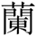
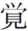
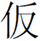
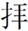

徐庾集合印五本 一·三○ 一月十日
唐四名家集四本 一·一○
五唐人诗集五本 二·○○
穆天子传一本 ○·二○ 一月十一日
花间集三本 ○·八○
Ch.Meryon一本 艾锷风赠 一月十四日
温庭筠诗集一本 ○·三○ 一月十五日
皮子文薮二本 ○·七○六·四○○
经典集林二本 一·○○ 二月十日
孔北海等年谱四种一本 一·○○
玉谿生年谱会笺四本 二·○○四·○○○
现代理想主义一本 蒋径三赠 三月十五日
老子道德经一本 ○·二○ 三月十六日
冲虚至德真经一本 ○·四○
文心雕龙补注四本 ○·八○ 三月十八日一·四○○
五百石洞天挥麈六本 二·八○ 四月十九日
寰宇访碑录校勘记二本 二·○○ 四月二十四日
十三经及群书札记十本 二·○○
巢氏病源候论八本 二·四○
粤讴一本 ○·三○
白门新柳记二本 ○·三○
南菁书院丛书四十本 九·○○一八·八○○
补诸史艺文志四种四本 一·三○ 六月九日
三国志裴注述一本 ○·五○
十六国春秋纂录二本 ○·六○
十六国春秋辑补十二本 三·八○
广东新语十二本 四·八○
艺谈录二本 二·○○
花甲闲谈四本 一·四○
玉历钞三种三本 常维钧收寄 六月十一日
二十四孝图二种二本 同上
百孝图五本 同上
二百卌孝图四本 同上
文学大纲第二三册二本西谛寄赠六月十六日一四·四○○
史通通释六本 三·○○ 七月一日
东塾读书记五本 一·八○ 七月三日
清诗人征略十四本 四·○○
松心文钞三本 一·五○
桂游日记一本 ○·四○
太平御览八十本 四○·○○ 七月四日
韩诗外传二本 ○·八○ 七月二十六日
大戴礼记二本 ○·六○
释名一本 ○·三○
邓析子一本 ○·一○
慎子一本 ○·二○
尹文子一本 ○·一○
谢宣城诗集一本 ○·三○
元次山文集二本 ○·五○五三·六○○
六醴斋医书二十二本 三·五○ 八月二日
益雅堂丛书二十本 五·○○ 八月十三日
唐土名胜图会六本 二·○○一○·五○○
南海百咏一本 ○·二○ 九月十六日
易林释文一本 ○·三○
汉碑征经一本 ○·三○
吴氏遗著二本 ○·八○
刘氏遗书二本 ○·七○
愈愚录二本 ○·七○
句溪杂著二本 ○·五○
学诂斋文集一本 ○·二五○
广经室文钞一本 ○·二五○
幼学堂文稿一本 ○·二○
白田草堂存稿两本 ○·六五○
陈司业遗书二本 ○·七○
东塾遗书二本 ○·四○
无邪堂答问五本 一·○○六·九五○
昆虫记第四本一本 三·三○ 十月五日
 小品集一本 二·八○
小品集一本 二·八○
或ル魂の窎展一本 二·五○
世界の始一本 一·六○
支那学文薮一本 三·八○ 十月八日
雖モ地球ハ動イテ居ル一本 一·八○
虹腘畫譜一二辑二本 四·○○
革命芸術大系一本 一·○○ 十月十日
人物志一本 ○·四○ 十月十一日
夷坚志二十本 七·二○
文学大纲第四本一本 西谛赠
ダマスクスヘ一本 二·六○ 十月十二日
痴人の告白一本 二·五○
島之農民一本 二·二○
燕曲集一本 二·二○
世界性業婦制度史一本 三·○○
動物詩集一本 二·二○
瘆農露西亜小説集一本 二·二○
漫畫の淶洲一本 二·二○
偶象再興一本 二·二○ 十月十七日
アルス美術叢書二本 四·○○ 十月二十二日
黑旗一本 三·一○
アルス美術叢書三本 六·○○ 十月二十七日
近代文芸与恋愛一本 三·○○
海外文学新選二本 一·四○ 十月二十九日
昆虫記第三卷一本 三·○○ 十月三十一日
欧羅巴の滅亡一本 一·○○
革命露西亜の芸術一本 二·○○
芸術战綦一本 二·○○七四·二○○
芸術と社会生活一本 ○·八○ 十一月二日
日本童話選集一本 三·四○ 十一月四日
青空の梢に一本 内山书店赠 十一月五日
御制耕织图二本 一·○○ 十一月六日
文学評論一本 二·○○ 十一月七日
文学論一本 一·一○ 十一月十日
外国文学序説一本 二·二○
日本原始絵畫一本 四·三○
大自然と魌魂との牷話一本 一·七○ 十一月十一日
 换期の文学一本 二·三○
换期の文学一本 二·三○
有島武郎著作第五十集二本 二·六○ 十一月十八日
六朝時代の芸術一本 二·○○
現代の独逸文化及文芸一本 二·○○
近代芸術論序説一本 二·二○
現代俄国文豪傑作集一本 一·二○ 十一月二十日
貘の舌一本 一·二○
バクダン一本 二·○○
最近思潮批判一本 一·六○ 十一月二十二日
ヴィクトル·ユゴオ一本 一·五○
愛

情調一本 ○·六○世界美術全集17一本 三·二○ 十一月二十五日
英文学

帳一本 三·四○切支丹殉教記一本 二·○○
日本印象記一本 一·六○
アメリカ文学一本 二·○○ 十一月二十六日
承华事略二本 一·○○
英国文学史一本 四·○○ 十一月三十日
英国小説史一本 三·六○
版画を作る人ヘ一本 二·六○
汉画二本 一·三○六〇·四〇〇
说郛四十本 一四·○○ 十二月三日
The Woodcut of To-day一本 五·○○ 十二月五日
ロシア文学史一本 一·八○
最新ロシア文学研究一本 二·四○
近代美術史潮論一本 五·○○
医生の記錄一本 一·五○
北米遊説記一本 二·五○
文[無]產階級の文化一本 二·二○ 十二月十四日
トルストイとマルクス一本 ○·八○
黒い

面一本 ○·六○
金芸術一本 ○·八○自我経一本 三·○○ 十二月十九日
ニール河の草一本 三·○○
鳥羽僧正一本 二·○○ 十二月二十二日
あるき太郎一本 一·四○
仏蘭西文学史序説一本 三·○○ 十二月二十四日
芸術の勝利一本 二·六○
ロシア革命後の文学一本 ○·八○
近代文芸思潮概論一本 四·七○ 十二月二十七日
美術全集第7册一本 一·六○五七·三○○
总计一年=三○七·九五○元
平匀每月=二五·六四五元